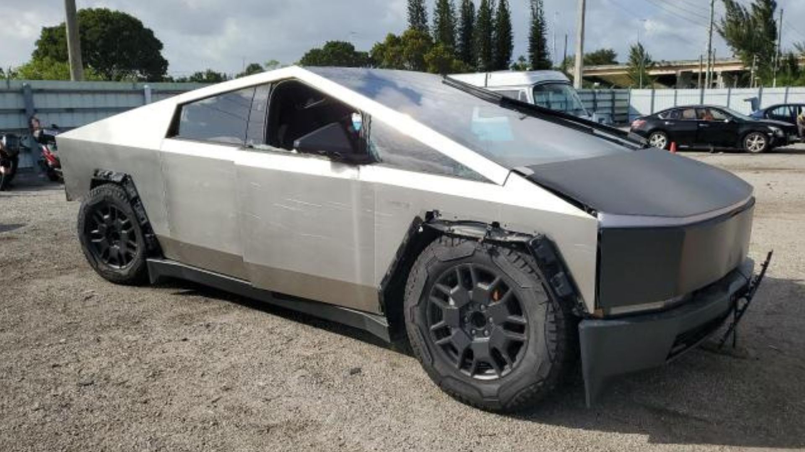

Tesla Cybertruck: ¿la decepción eléctrica del año?
Cuando el Tesla Cybertruck se presentó al mundo en 2019, fue recibido como un vehículo que desafiaría las normas del diseño automotriz y establecería un nuevo estándar para las camionetas eléctricas. Su cuerpo angular de acero inoxidable, estilo cyberpunk y las ambiciosas promesas de Elon Musk sobre durabilidad y desempeño crearon una ola de entusiasmo sin precedentes. Pero cinco años después, y a un año de su llegada a las carreteras, el Cybertruck se ha convertido en un recordatorio de que incluso las ideas más innovadoras pueden desmoronarse si no se ejecutan correctamente. El primer año del Cybertruck en el mercado no ha sido fácil. En lugar de consolidarse como el referente de las camionetas eléctricas, ha enfrentado constantes críticas y decepciones. Los problemas de calidad, las llamadas a revisión y un diseño que, aunque espectacular, resulta poco práctico, han hecho que muchos lo cataloguen como el mayor fiasco automotriz de 2024.